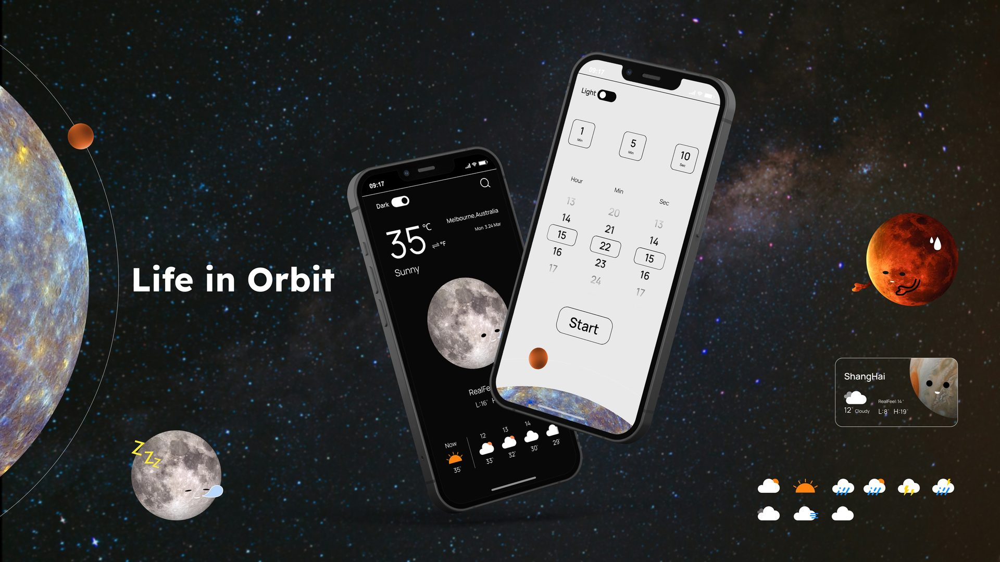
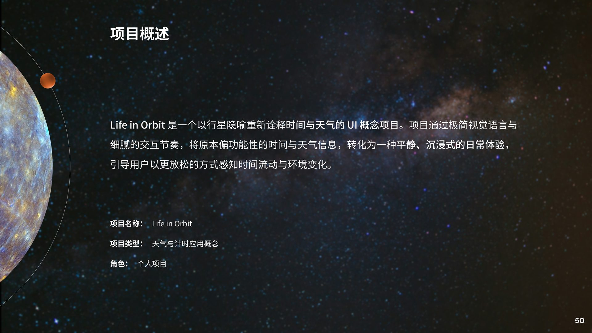
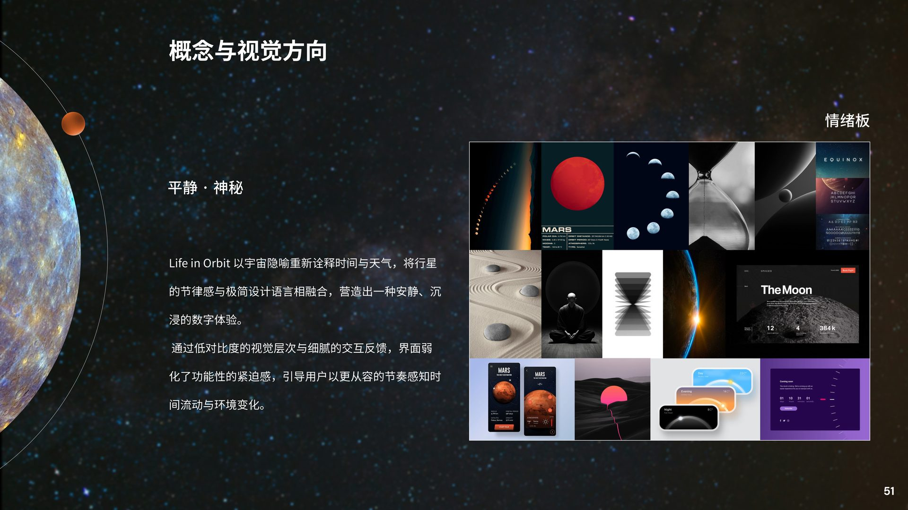
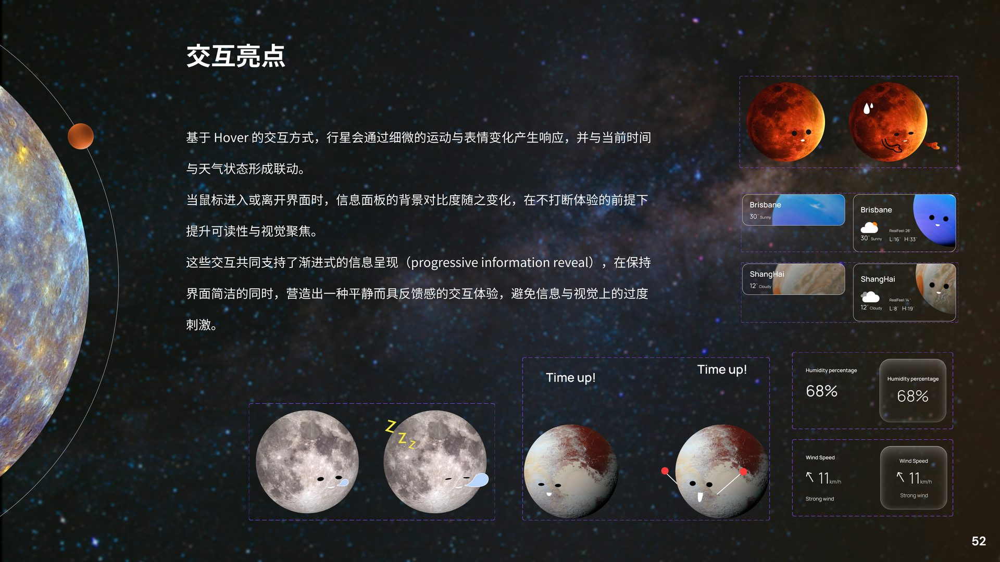
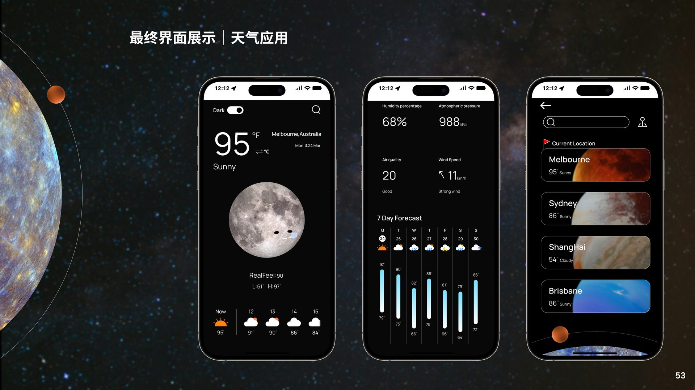
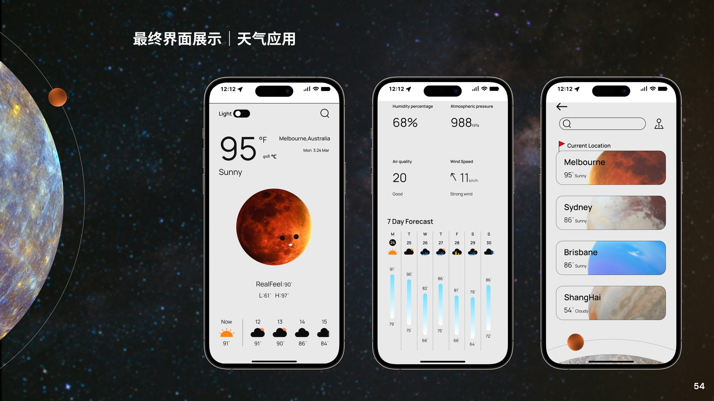
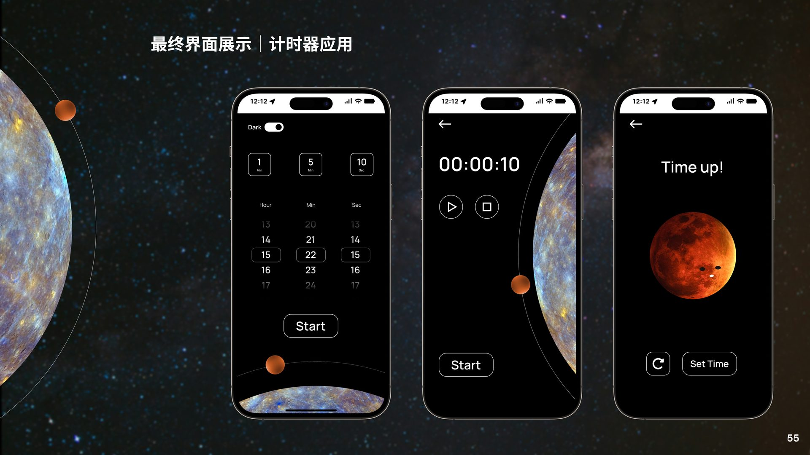
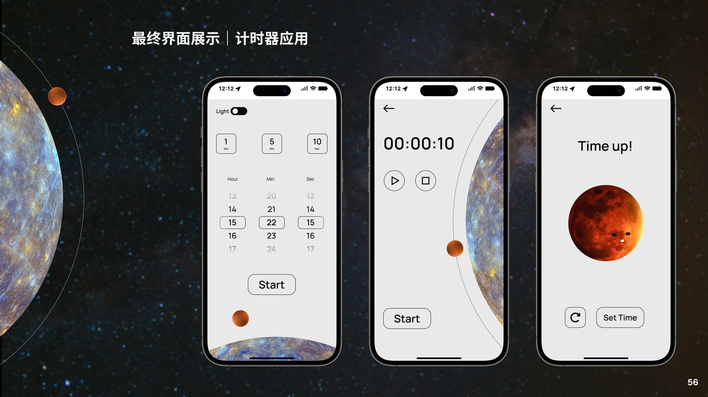
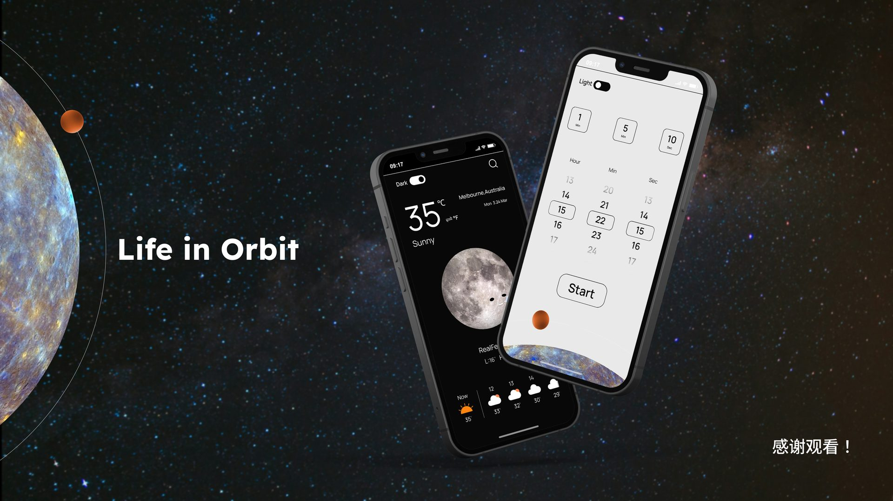

个人概念项目 · UI / 视觉Personal Concept · UI / Visual
Life in Orbit · 在行星节奏中感知时间Life in Orbit · Sense Time Through Planetary Rhythm

项目概述Project Overview
Life in Orbit 是一个以行星隐喻重新诠释时间与天气的 UI 概念项目。它通过极简视觉语言与细腻的交互节奏，将原本偏功能性的时间与天气信息，转化为一种平静、沉浸式的日常体验，引导用户以更放松的方式感知时间流动与环境变化。Life in Orbit is a UI concept that reinterprets time and weather through planetary metaphors. With a minimalist visual language and delicate interaction rhythm, it transforms functional time and weather data into a calm, immersive daily experience, helping users sense the flow of time and environmental changes more relaxedly.

概念与视觉方向Concept & Visual Direction
项目以宇宙为情绪基调，将行星的节律感与极简设计语言相融合，营造出安静、神秘的数字氛围。通过低对比度的视觉层次与细腻的交互反馈，界面弱化了功能性的紧迫感，让用户能够以更从容的节奏查看时间与天气。The project uses the cosmos as its emotional anchor, blending planetary rhythm with a minimalist design language to create a quiet, mysterious digital atmosphere. Low-contrast visual layers and subtle interaction feedback reduce the urgency of functional data, letting users check time and weather at a more relaxed pace.
减少视觉噪音，用深色星空与柔和渐变降低信息压迫感。Reduce visual noise; use dark starfields and soft gradients to lower information pressure.
以行星、轨道、天体运动为意象，唤起对时间与宇宙的联想。Use planets, orbits, and celestial motion to evoke time and the universe.
全屏天体与微动效让用户在交互中获得连贯的感官体验。Full-screen celestial bodies and micro-animations create a continuous sensory experience.

交互亮点Interaction Highlights
设计围绕渐进式信息呈现（progressive information reveal）展开：当鼠标进入或离开界面时，行星会以细微的运动与表情变化作出响应，信息面板的背景对比度也随之变化，在保持界面简洁的同时提供可感知的反馈。The design centers on progressive information reveal: when the cursor enters or leaves the interface, planets respond with subtle motion and expression changes, and the info-panel background contrast shifts, providing perceptible feedback while keeping the interface clean.

最终界面 · 天气应用（暗色模式）Final UI · Weather App (Dark Mode)
天气应用以月亮为默认视觉主体，深色背景让天体与信息层级更加清晰。主屏展示当前温度、天气状态与逐小时预报；详情页补充湿度、气压、空气质量与 7 日预报；城市列表页则以行星卡片形式管理多地天气。The weather app uses the Moon as the default visual subject, with a dark background making celestial bodies and information hierarchy clearer. The home screen shows current temperature, weather state, and hourly forecast; the detail page adds humidity, air pressure, air quality, and a 7-day forecast; the city list manages multiple locations through planetary cards.

最终界面 · 天气应用（亮色模式）Final UI · Weather App (Light Mode)
亮色模式以火星为视觉主体，浅色背景与深色文字形成高对比，满足日间或强光环境下的可读性需求，同时保留行星隐喻的一致性。Light mode uses Mars as the visual subject, with a light background and dark text for high contrast in daytime or bright conditions, while maintaining the planetary metaphor.

最终界面 · 计时器应用（暗色模式）Final UI · Timer App (Dark Mode)
计时器将时间设定转化为行星轨道上的选择。用户设定小时后，倒计时以行星环绕的方式可视化呈现；时间结束时，行星表情变化提醒用户，避免传统计时器带来的紧迫感。The timer turns time-setting into choices along a planetary orbit. After setting hours, the countdown is visualized as a planet orbiting; when time is up, the planet's expression changes to alert the user without the urgency of traditional timers.

最终界面 · 计时器应用（亮色模式）Final UI · Timer App (Light Mode)
亮色版计时器同样保持行星环绕的隐喻，浅色界面更适合日间场景，也让时间数字与轨道对比更加明显。The light-mode timer keeps the planetary orbit metaphor, better suited for daytime use and making time digits and the orbit contrast more visible.

项目结语Closing
Life in Orbit 尝试回答一个问题：当工具类应用被赋予情感化隐喻后，日常的信息查看是否能变得更有仪式感与抚慰感？行星、轨道与天体表情共同构成了一套安静而连续的设计语言。Life in Orbit asks: when utility apps are given emotional metaphors, can daily information checking become more ritual and soothing? Planets, orbits, and celestial expressions form a quiet, continuous design language.
